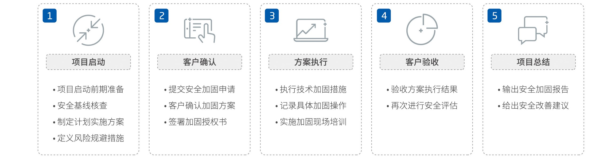

提供针对基线、基线核查及安全加固的全面服务解决方案
- 基线⸺在国标中有明确的规范及安全控制措施要求，基本适用于所有场景，可使系统达到一定的安全防护水平。
- 基线核查⸺针对不同版本的服务器系统、第三方应用软件和网络硬件设备、接入控制、恶意软件对抗等进行基础性安全配置检查。
- 安全加固⸺针对不同的目标系统，通过修改安全配置、增强安全机制等方式，将安全性提升到满足用户需求的安全级别的过程。
目标市场
- 政策合规需求⸺目前针对网络和主机的安全加固服务是等保项目中的必备达标项。
- 业务实用需求⸺安全加固服务可增强用户网络和主机的安全防御能力，既要帮助用户满足合规，同时又帮助用户真正达到网 络安全能力提升，补齐系统安全短板，防范安全风险，提高整体运营安全系数。
- 特定行业需求⸺适用于等保合规行业（如：政府机关、金融行业、电信运营商、能源行业、企业单位等）和关键基础设施行业（如： 金融、电力、运营商）。
赛博特安安全加固服务的内容
- 服务背景：针对等保要求和行业应用特性，为用户的网络设备和主机操作系统的脆弱性提供分析评估和整体安全加固方案设计。
- 服务内容：身份鉴别及认证授权、通信协议和日志审计跟踪策略等的安全加固。
- 服务目标：解决目标系统在安全评估中发现的技术性安全问题，消除目标系统由于配置不当而暴露的弱点。
赛博特安安全加固服务的流程
